Economic Report

Macro Outlook in Brief
Global: From Oil to Interest Rate Shock
Energy price increases have driven inflation and weighed on growth.
With interest rate hikes, tighter financing conditions are likely to become a brake on growth.
USA: Robust but Cautious Consumption
The labor market is surprisingly strong and consumption remains solid. If inflation remains persistent, interest rate increases could weaken consumption and dampen growth.
Eurozone: Structural Problems Meet Interest Rate Brake
Priced-in key interest rate hikes meet an already weakened economy. Restrictive credit standards and high energy costs reinforce existing structural weaknesses.
China: Policy Supports a Weak Domestic Economy
Expansionary monetary and fiscal policies stabilize the economy while the real estate market and domestic demand remain weak. Export dynamics continue, but geopolitical risks make growth vulnerable.
Growth Brake: Interest Rates?
REAL ECONOMY
Growth

USA and Eurozone: Oil Price Shock
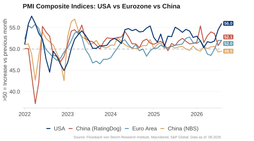
In May, the business situation in the US remained positive, while it clouded over further in the Eurozone. The Purchasing Managers’ Index (PMI) measures the current business situation and companies’ short-term expectations. It is above 50 if more companies report an improvement than a deterioration. In the Eurozone, the PMI fell to 48.5, as the services sector PMI in particular fell sharply. In the US, it fell slightly to 51.5. In China, the official NBS PMI was 50.5, while the private RatingDog PMI rose to 54 and remained volatile.
Eurozone: Services Sector Weak
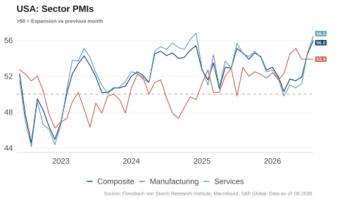
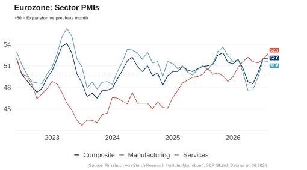
The services sector in the Eurozone continues to weaken, while the business situation in industry declined slightly but remained in expansionary territory. The services PMI fell to 47.7 in May, weighed down by sharply rising energy prices and disruptions to travel. The manufacturing PMI fell slightly to 51.6. In the US, the services sector remained stable with a PMI of 50.7, while industry continued to expand with 55.1.
Germany and France with Gloomy Outlook
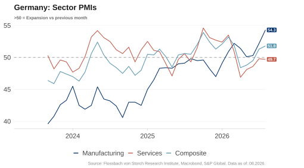
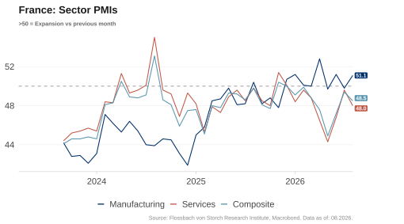
In Germany and France, the business situation has clouded over further. The services PMI in May was 48.8 in Germany and 44.3 in France. The manufacturing PMIs also declined. Whether they will increase again in the coming month is likely to continue to depend on the development of energy prices.
German Industrial Production Continues to Shrink
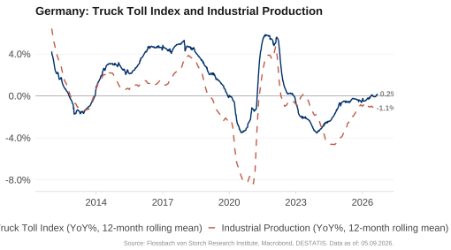
The truck toll mileage index, which measures the mileage of toll-paying trucks on motorways and is considered a leading indicator of industrial production, has recovered noticeably after the long phase of weakness since 2024, but shows no growth on an annual average. Industrial production is following this development and is declining less sharply than in 2025. However, the slight recovery is likely to have already ended. Growth in industrial production is currently not in sight.
China: Weak Domestic Economy
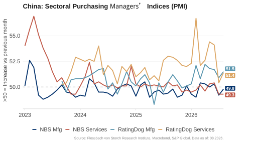
The purchasing managers’ indices for May 2026 paint a mixed picture. The official NBS PMI, which primarily tracks larger and domestic-oriented companies, was 50.0 in industry and 50.3 in the services sector. In contrast, the private, more export-oriented RatingDog PMI remained higher and more volatile at 51.8 (industry) and 54.4 (services). The divergence continues to reflect the weakness of the domestic market compared to the export economy.
Construction Activity Not Recovering
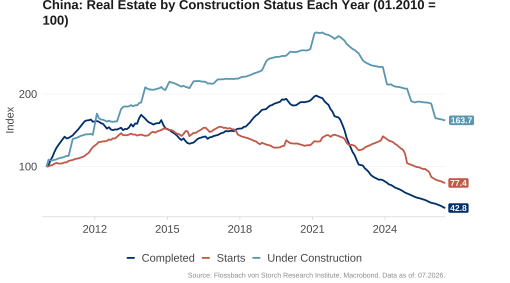
The number of new building starts fell further in March and has been below the 2010 level since 2022. This is also reflected in the number of unfinished and completed properties, which also fell sharply.
Financing Conditions
US Banks: Restrictive Lending to Companies
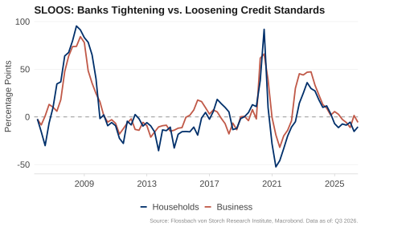
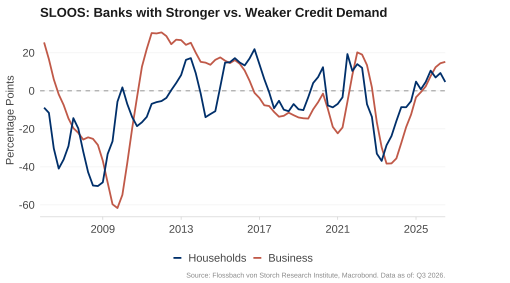
The SLOOS survey from April 2026 shows that more banks tightened rather than eased their credit standards for companies (slightly positive value). The majority of surveyed banks reported stronger demand for credit in the last three months (positive value).
Restrictive Credit Conditions in the Eurozone
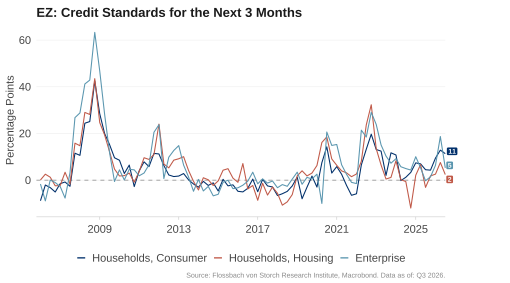
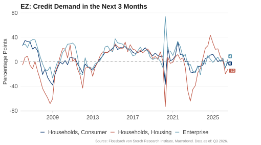
According to the ECB’s Bank Lending Survey (BLS) for the second quarter of 2026, credit conditions are expected to become more restrictive for both companies and households in the coming three months (positive value). Net demand for credit is expected to decline for both residential real estate and consumer purposes according to respondents.
Weak Credit Impulse
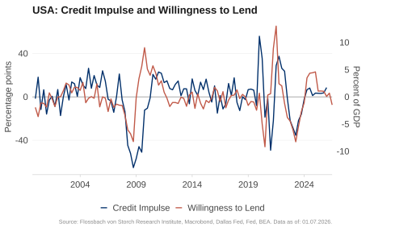
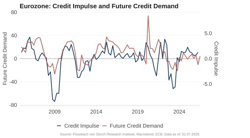
The credit impulse (the change in the flow of credit to the private sector in percentage points of GDP) is a good leading indicator for private demand. Most recently, it was slightly positive in both the US and the Eurozone, but lost momentum. Since the number of banks with increasing lending and demand is falling significantly, particularly in the Eurozone, this points to a negative credit impulse soon.
Weakening Credit Impulse in China
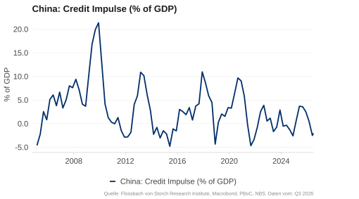
The credit impulse in China was slightly positive at the beginning of the year and fell back into negative territory in the first quarter of 2026. This continues to point to weak private demand.
Private Consumption: USA, Eurozone and China

USA: Retail Sales Continue to Rise
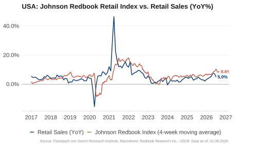
Official retail sales rose by 5.2% year-on-year in April, slightly more than in previous months. The weekly “Johnson Redbook Retail Sales” index, which tracks sales from department stores and retail shops, rose sharply and shows strong US retail sales through mid-May.
USA: Credit Card Debt Rising Slightly Faster
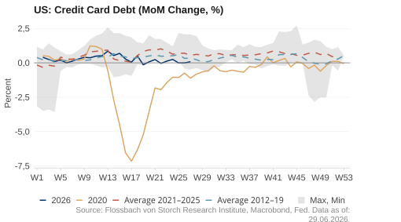
Credit card debt grew as fast in recent weeks as in previous years. The monthly change was recently within the usual seasonal pattern of previous years.
USA: Google Searches Point to Cautious Consumption
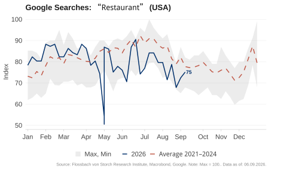
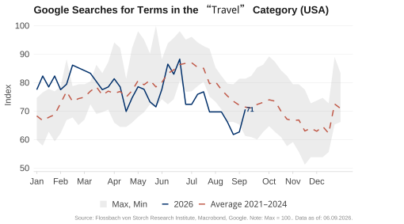
Consumption often begins with an internet search. Online search data is therefore a good leading indicator for private consumption. Search intensity for the term “restaurant” has been slightly below the average of the last five years in recent weeks, after previously being higher. Terms in the “travel” category have been searched less than the average for the last five years for two weeks.
USA: The US Savings Rate Continues to Fall
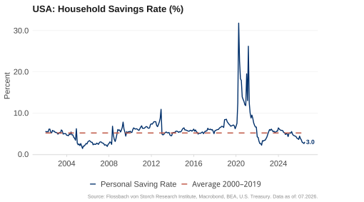
The savings rate of US households has averaged 5.2% since 2000. In crises, it tends to rise. In April, the savings rate fell to 2.6% and remained below the historical average. Uncertainty about the duration of the war in Iran and the impact on energy prices could motivate households to save more again.
Only Republican Sentiment Remains Optimistic
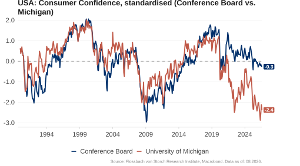
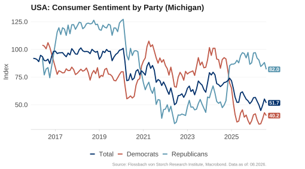
On average, American consumer sentiment remains pessimistic. The Conference Board’s Consumer Confidence Index is at the level of the Corona crisis. The University of Michigan’s Consumer Sentiment Index reached values that usually only occur in recessions. As usual, supporters of the opposition party are more pessimistic. Republicans, on the other hand, remain optimistic.
Energy Expenditure: USA Lower than Eurozone
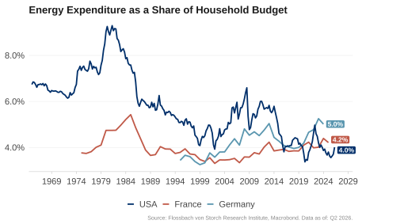
Historically, the energy burden on households in the US was higher than in Europe. However, this relationship has reversed with the Corona crisis and the war in Ukraine. By the end of 2024, the share of energy expenditure in total household expenditure was higher in Germany and France than in the US. The current oil price shock is likely to further strengthen this trend.
Eurozone: Energy Burden of German Households
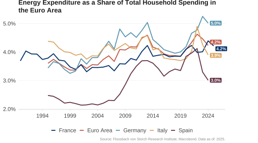
The energy burden on German households has been above the Eurozone average since the mid-2000s. With the outbreak of the war in Ukraine, it rose significantly, while it fell back again, particularly in Spain and Italy. In Germany, on the other hand, the share of energy expenditure in total household expenditure remained at around 5 percent.
Eurozone & Germany: Household Savings Rate Remains Stable
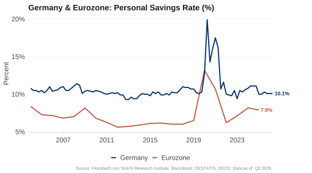
The savings rate in Germany remains stable at 10%, significantly higher than in the US (2.6%). Historically, the German savings rate has also been higher than in the Eurozone. During the Corona crisis, it rose to almost 20%.
Google Searches Point to Caution in France and Germany
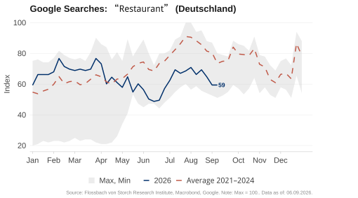
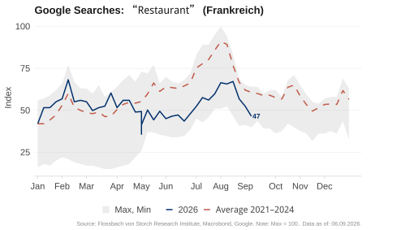
Google searches for “restaurant” in Germany and France point to weak private demand. In both countries, search intensity in recent weeks was lower than the average of the last five years for the same time of year.
Less Caution in Spain
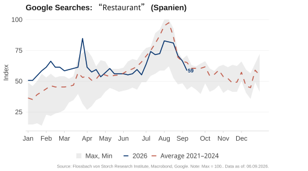
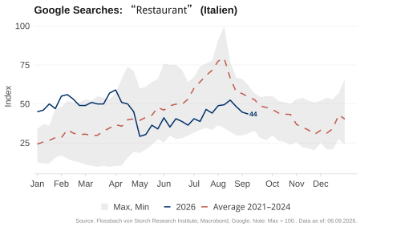
While search intensity for “restaurant” in Spain remained as high as the average for recent years, it was slightly lower in Italy.
Sentiment Improves Only Slightly
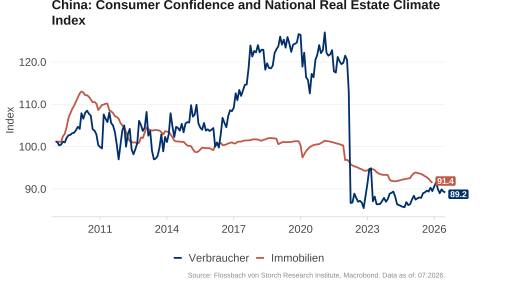
In China, consumer sentiment has improved slightly since the beginning of 2025, but remains historically low. Sentiment in the real estate sector is also depressed. The “National Real Estate Climate Index” has been trending downwards for three years.
Labor Market

USA: Continued Strong Rise in Nominal Wages
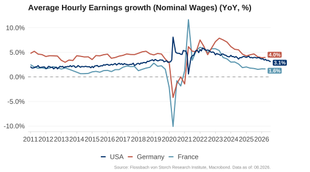
In May, average hourly wages in the US rose by 3.4% year-on-year, again slightly slower than in the previous month. In the first quarter of 2026, wage growth was 3.9% in Germany and only 1.6% in France. In Germany and the US, wage growth remains above the 2011-2019 average.
USA: Normalization of Wage Growth?
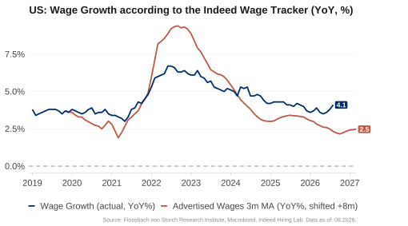
Wage growth according to the Indeed Hiring Lab Wage Tracker appears to lead US median wage growth by around seven months. If this is correct, wage growth could normalize further.
USA: Weak Wage Growth for Low Wages
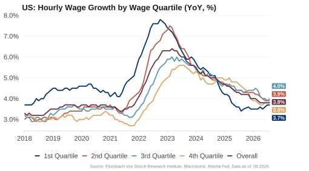
In April, hourly wages in the US rose by an average of 3.8%. Wage increases in individual wage groups are converging. In the lowest wage quartile, wages rose by 3.6%, in the highest quartile by 3.7%. This means that the highest wages are no longer growing so much faster than at the peak in 2022 and are rising only slightly faster than the lowest.
The US Labor Market is Less Tense
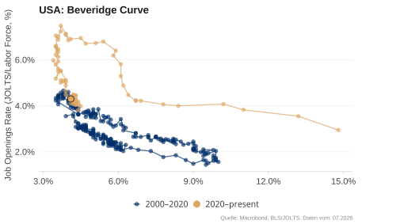
The Beveridge curve shows the relationship between the vacancy rate – job openings as a proportion of the sum of filled and open positions – and the unemployment rate. With the Corona crisis, the curve shifted outwards because unemployment remained high despite many vacancies due to policy measures. Rigidities have eased again and the Beveridge curve has returned to its pre-Corona level. The situation on the US labor market has therefore normalized.
Job Growth Recovers but Remains Weak
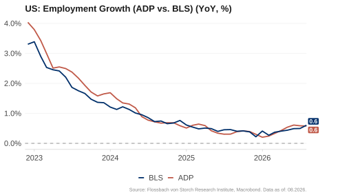
In May, the number of jobs in the private sector excluding agriculture rose by 0.5% compared to the previous year according to the ADP report, slightly higher than in the previous month. Official figures also showed annual growth of 0.5%. The US labor market remains stable, but job growth is now slower than in the years between the financial and Corona crises.
USA: Layoffs and Jobless Claims Within Normal Ranges
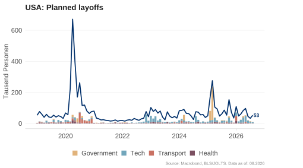
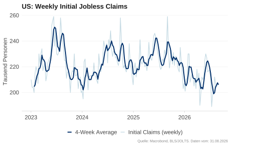
Around 97,000 job cuts were announced in May, slightly more than in the previous month. At the same time, weekly initial jobless claims recently rose slightly to 225,000, but remained at the lower end of the fluctuations of the past three years and at a historically low level. Between 1990 and 2019, the weekly average was around 350,000.
USA: Falling Labor Supply
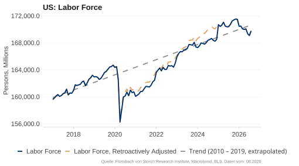
Labor supply in the US has stagnated since autumn 2024. A methodological adjustment increased the labor force by 2.1 million people in January 2025. A new back-calculated series (red) clearly shows that growth already stalled in autumn 2024. With Donald Trump’s more restrictive migration policy, labor supply is likely to continue to stagnate or even fall.
Nominal Wages Rising Faster in Germany
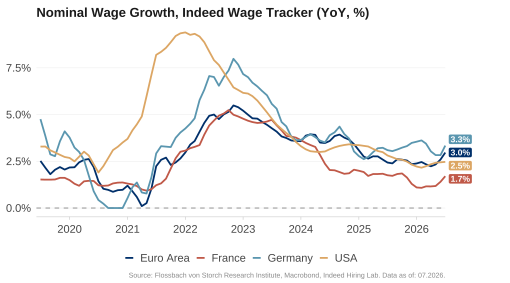
Indeed Hiring Lab’s Wage Tracker shows continued rising nominal wages. In April, the rate of change was 2.3% in the Eurozone, 3.2% in Germany, 1.1% in France and 2.3% in the US. Only in Germany are wages rising faster than in the previous year.
Eurozone: Tense Labor Market
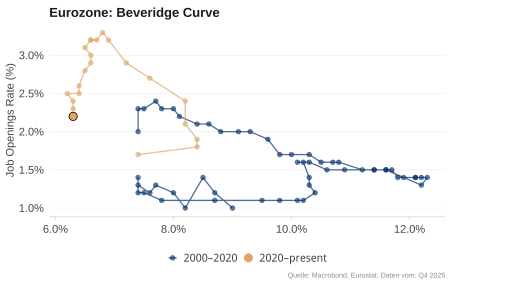
The Beveridge curve, which shows the relationship between the vacancy rate and the unemployment rate, points to a tense labor market. During the Corona crisis, the curve shifted outwards as policy measures meant that unemployment remained high despite many vacancies. In the meantime, these rigidities have largely eased and unemployment is at a historically low level. The vacancy rate has declined, but again corresponds to the usual relationship between the two variables.
China: Very High Youth Unemployment
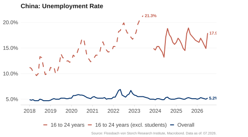
China’s unemployment rate has moved sideways at 5% in recent months. Youth unemployment, defined as the unemployment rate among 16 to 24-year-olds, reached 21.3% in mid-2023. After a six-month break in publication, there is a new statistic “excluding students”. This was 16.9% in February.
PRICES
Commodities

High Sea Freight Costs for Crude Oil
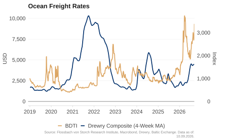
Freight rates for crude oil tankers have risen to new record levels as a result of the blockade of the Strait of Hormuz. Despite a recent decline, they remain above the peak level of 2022 after the start of the Ukraine war. The World Container Index (WCI), which reflects freight rates in trade in goods, remains at a low level due to persistent overcapacities in container shipbuilding.
Backwardation: Falling Oil Prices Expected
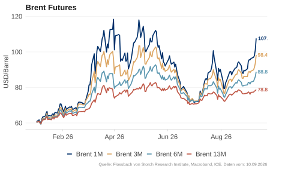
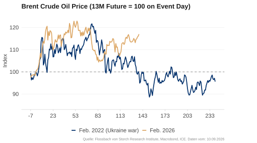
The market expects falling oil prices. Deliveries in three months or one year are cheaper than in the current month (front month). This “backwardation” signals that the current shortage is viewed as temporary. The prices of futures with delivery in one year have risen sharply again in recent days, more strongly than after the start of the war in Ukraine in 2022.
When Will Shipping Through the Strait of Hormuz Normalize?
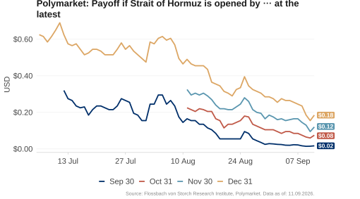
A reopening of the Strait of Hormuz is crucial for oil supply and thus for oil prices. At the end of May, prediction markets were still pricing in a 65% probability of an opening by the end of June. On June 8, however, it was only 10%. For the end of July, the implicit probability is 28%, and for the end of December, it is 74%.
European Gas Prices Following a Similar Pattern to 2022
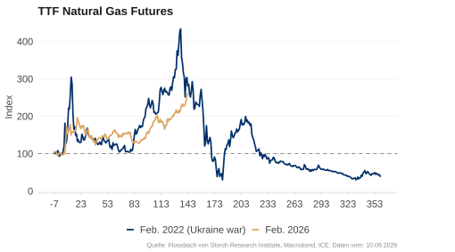
Europe remains heavily dependent on imports of oil and gas. After a rapid increase of around 75%, Dutch TTF natural gas futures with a one-month maturity have recently declined slightly, but are still around 50% above the level one week before the start of the Iran war. During the 2022 energy crisis, European gas prices tripled at times.
USA

USA: Inflation Rate Rising Sharply
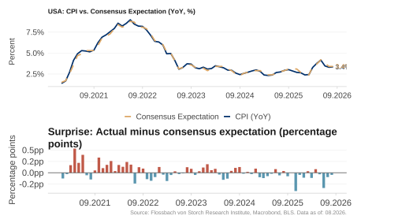
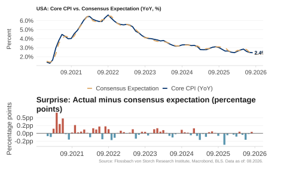
Consumer prices continued to rise in the US in May. The Consumer Price Index (CPI) increased by 4.2% compared to the previous year, as expected. Core inflation was 2.9%, matching the median expectations of participants in a monthly Bloomberg survey. The sharp rise is particularly due to the oil price shock.
Inflation in the USA: CPI, PCE & GDP Deflator
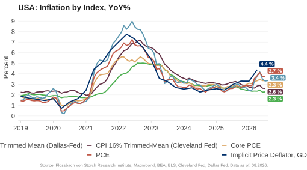
Inflation is determined via various indices. The CPI tracks consumer prices, the PCE index household expenditure and the GDP deflator the prices of all economic goods produced domestically. The rates of change of all three indices peaked in mid-2022. In April 2026, the inflation rate of the Fed’s favored core PCE index (excluding energy and food) was 3.3%.
Inflation Drivers: Services and Energy
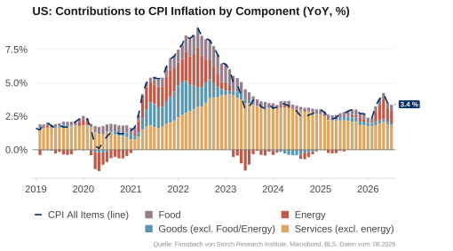
Price increases in services continue to be the dominant driver of US inflation. While the contribution of food prices remains moderately positive, the latest oil price shock is now having a full impact: the inflation contribution of energy prices is higher than it has been since 2022 and is noticeably driving the overall rate up again.
USA: Rising Inflationary Pressure
In May, service prices rose by 3.5% compared to the previous year. Food prices continued to rise strongly with an annual rate of change of 2.7%. Energy prices rose particularly strongly: with an increase of 23% compared to the previous year, they were as high as they were last in 2022.
USA: Supercore Inflation Rising Again
Supercore is defined as the services price index excluding energy and housing costs. Based on the CPI index, the annual rate of supercore inflation rose to 3.7% in May. Measured by the PCE index, supercore inflation rose to nearly 3.6% in April. This shows that inflationary pressure in the services sector remains high even without housing costs.
Rent Price Growth Does Not Fall Anymore
Rent costs make up a large part of service prices in the CPI and are also strongly correlated with the costs of owner-occupied housing. During the Corona years, the Zillow Rent Index for new rentals was a good leading indicator for the development of rents, as existing rents react more slowly. Currently, at around 1.7%, the Zillow Rent Index signals slower rent growth than the rebounding CPI Rent Index at around 2.9%.
USA: Inflation Could Rise Further
The price index in the ISM Services PMI leads consumer price inflation by about six months. If this correlation is confirmed, inflation is likely to rise further in the coming months.
Eurozone

Rising Inflation in the Eurozone
In May, the Eurozone HICP rose by 3.2% year-on-year, core inflation (excluding energy and food) was 2.5%. In Germany (2.7%), France (2.8%), Italy (3.3%) and Spain (3.6%), inflation in May was again clearly above the 2% target.
Price Increases in Services and Energy
Until the end of 2022, energy and food prices were the main contributors to inflation. Currently, price increases are predominantly driven by rising service prices, and to a lesser extent by food and again by energy. In the meantime, however, energy prices had a dampening effect on inflation for several months.
Inflationary Pressure Remains
The 3-month and 6-month annualized core inflation rates show short-term inflationary pressure. In May, both the 3-month and 6-month rates in the Eurozone were 2.4%. In the US, the 3-month rate was 3.2% and the 6-month rate was 2.9%.
Inflation Expectations

Volatile Consumer Inflation Expectations
In May 2026, US consumers’ inflation expectations for the next twelve months were 4.8% (University of Michigan) and 3.6% (New York Fed). In the Eurozone, households expected a median of 4% for the coming year and 2.9% for the next three years in February, according to the ECB.
Energy is Becoming More Expensive Again …
Food and energy prices are excluded to analyze the underlying inflation development. However, these prices are precisely what are decisive for the perception of purchasing power and voting behavior. After the sharp rise in 2021, energy prices have stabilized, but food prices continue to rise. The war in Iran has now driven energy costs up again: in the US they are 19% above the level of Trump’s election (Nov. 2024), in the Eurozone it is 10%.
… Which Should Harm US Republicans
In November 2026, the entire House of Representatives and 35 of the 100 Senate seats will be re-elected. In prediction markets, a Republican majority in the House of Representatives is currently only priced in at 20%. For the Senate, the probability has recently risen again and currently stands at around 55%.
China: Deflation Concerns
The Chinese inflation rate has been below 1% since mid-2023. In April it was 1.2%, core inflation (excluding food and energy) was 1.2%. This underscores the country’s weak economic dynamic. High oil and energy prices are likely to increase the inflation rate at least temporarily.
INTEREST RATE EXPECTATIONS
& FISCAL IMPULSE
USA: Falling Real Interest Rate
The real interest rate is the difference between the nominal interest rate and (expected) inflation. While the nominal interest rate can be read from the market, an estimate must be used for expected inflation. Depending on the approach chosen, the real interest rate for the US economy is currently between -1.0% and 0.3%. Alternatively, the yield on inflation-indexed government bonds (TIPS in the US) can be read from the market. For a two-year maturity, the real interest rate has been positive since April 2022 and recently rose to around 1.1%.
Volatile Interest Rate Expectations
In the futures markets, an interest rate hike of at most 25 basis points is priced in for the Fed by December 2026. In the Eurozone, interest rate hikes of around 50 basis points are priced in. Nevertheless, the interest rate level expected in Europe at the end of the year remains significantly below that of the US.
China: Expansive Monetary Policy

The Chinese central bank manages its monetary policy primarily through three instruments: the 7-day reverse repo rate, the one-year Loan Prime Rate (LPR) of commercial banks and the Reserve Requirement Ratio (RRR). In recent years, it has lowered all three rates several times to provide more liquidity and thus support the economy via credit expansion. For 2026, it signals a continued moderately loose monetary policy.
Moderate Fiscal Impulses for 2026
The latest IMF estimates have changed the picture for China in particular in 2026. Instead of the previously expected neutral fiscal impulse, a strong positive impulse is now forecast, supported by extensive state measures to support domestic demand. In the US, the fiscal impulse remained negative in 2024 and 2025, but a slight easing is expected for 2026. In the Eurozone, the fiscal impulse is shifting from 2025 to 2026, as the German armaments and infrastructure program in particular will only take effect with a delay.
Economic Forecast 2026
Our growth forecast for 2026 is based on a qualitative assessment of economic momentum, the growth effect of fiscal policy and financing conditions, including monetary policy. These forecasts are intended as orientation values and not as precise point predictions.
| Mom. | Fiscal. | Finanz. | FvS-RI | Bloomberg Consensus | |
|---|---|---|---|---|---|
| USA | 0 | + | 0 | 2.0 % | 2.1 % |
| CN | 0 | + | 0 | 4.6 % | 4.6 % |
| EA | - | + | 0 | 0.6 % | 0.8 % |
| DE | - | + | 0 | 0.4 % | 0.6 % |
USA: Stable consumption, a solid labor market situation and less rapidly rising wages justify the unchanged positive momentum. In terms of fiscal policy, no budget consolidation is planned. Rather, the course remains expansionary.
In terms of monetary policy, no interest rate cuts are expected until the end of the year. The war in Iran increases uncertainty and the risk of recession.
China: The continued weakening real estate sector is weighing on domestic demand. Industry is stabilizing the economy via exports, albeit particularly via subsidies, which points to overcapacities and has a deflationary effect. Slight impulses are to be expected from fiscal and monetary policy.
Eurozone / Germany: The negative momentum in Germany and the Eurozone as a result of the impact of the oil price shock on demand and industry is partially compensated at European level by the more dynamic growth in Spain and Italy. However, Spain is increasingly weakening. Debt-financed economic programs are likely to provide an impulse in 2026. Without deregulation, however, German infrastructure and armaments investments are likely to have only a weak effect. Rising oil and gas prices and a weak euro are additional burdens on the economy. In view of the poor business prospects and increased uncertainty, we have lowered our forecast again.
Legal Notice
The information contained and opinions expressed in this document reflect the views of the author at the time of publication and are subject to change without prior notice. Forward-looking statements reflect the views and future expectations of the author. Opinions and expectations may differ from assessments presented in other documents of Flossbach von Storch SE. The contributions are provided for information purposes only and without contractual or other obligation. The information and assessments contained do not constitute investment advice or any other recommendation. Liability for the completeness, timeliness and accuracy of the information and assessments provided is excluded. Historical performance is not a reliable indicator of future performance.
All copyrights and other rights, titles and claims in, for and from all information in this publication are subject without restriction to the applicable provisions and the property rights of the respective registered owners. You do not acquire any rights to the content. The copyright for published content created by Flossbach von Storch SE itself remains solely with Flossbach von Storch SE. Any reproduction or use of such content, in whole or in part, is not permitted without the written consent of Flossbach von Storch SE. Reprints of this publication and making it available to the public require the prior written consent of Flossbach von Storch SE. © 2026 Flossbach von Storch. All rights reserved.
bach von Storch. All rights reserved. ::: ::::